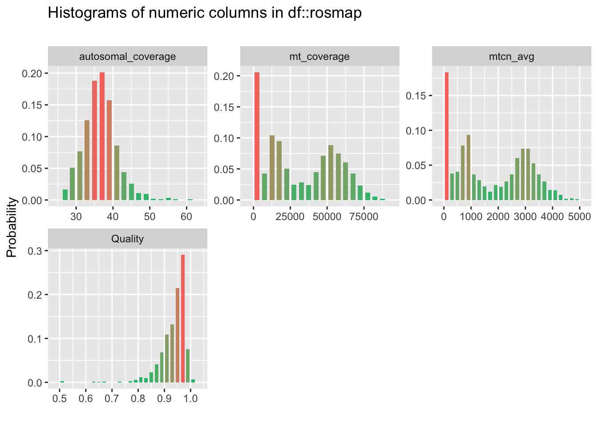
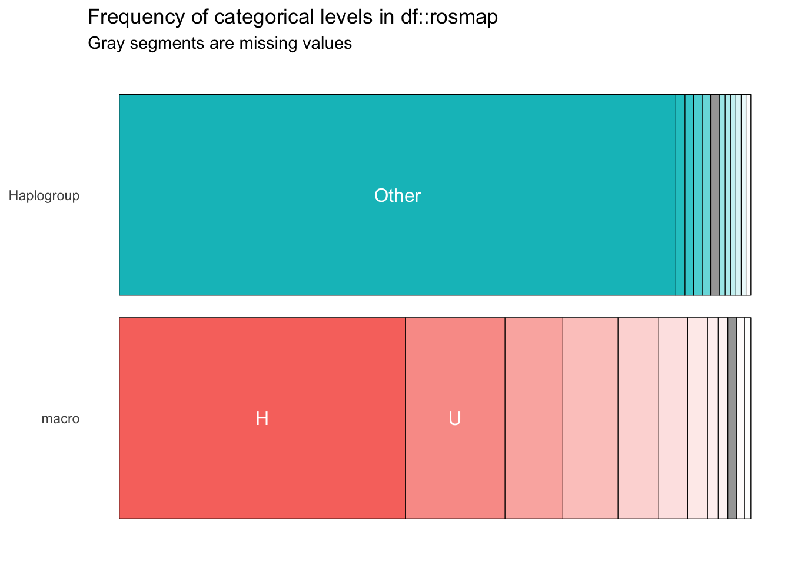

3.4 Clinical Diagnosis
- Clinical cognitive diagnosis summary:
dcfdxPhysician’s overall cognitive diagnostic category- 1 = NCI: No cognitive impairment (No impaired domains)
- 2 = MCI: Mild cognitive impairment (One impaired domain) and NO other cause of CI
- 3 = MCI: Mild cognitive impairment (One impaired domain) AND another cause of CI
- 4 = AD: Alzheimer’s dementia and NO other cause of CI (NINCDS PROB AD)
- 5 = AD: Alzheimer’s dementia AND another cause of CI (NINCDS POSS AD)
- 6 = Other dementia: Other primary cause of dementia
- Age at first Alzheimer’s dementia dx:
age_first_ad_dxAge at cycle where first Alzheimer’s dementia diagnosis was given - Final consensus cognitive diagnosis:
cogdxClinical consensus diagnosis of cognitive status at time of death - same coding asdcfdx - Clinical Parkinson’s disease:
r_pdis made by a clinician through review of self report questions, neurological exam (when available), cognitive testing, and interview of participant.- 1 = Highly Probable
- 2 = Probable
- 3 = Possible
- 4 = Not Present
- Stroke diagnosis:
r_strokes made by a clinician through review of self report questions, neurological exam (when available), cognitive testing, and interview of participant.- 1 = Highly Probable
- 2 = Probable
- 3 = Possible
- 4 = Not Present
## Joining, by = "variables"| variables | definitions | types | missing_percent | unique_count |
|---|---|---|---|---|
| cogdx | Clinical consensus diagnosis of cognitive status at time of death | factor | 46.00 | 7 |
| age_first_ad_dx | Age at cycle where first Alzheimer’s dementia diagnosis was given | numeric | 75.95 | 838 |
| dcfdx_bl | Physician’s overall cognitive diagnostic category - baseline | factor | 0.03 | 7 |
| dcfdx_lv | Physician’s overall cognitive diagnostic category - last visit | factor | 17.10 | 7 |
| r_pd_bl | Diagnosis of Parkinson’s disease - baseline | factor | 1.39 | 6 |
| r_pd_lv | Diagnosis of Parkinson’s disease - last visit | factor | 38.26 | 6 |
| r_stroke_bl | Diagnosis of stroke made by clinician - baseline | factor | 6.92 | 5 |
| r_stroke_lv | Diagnosis of stroke made by clinician - last visit | factor | 28.70 | 5 |
| col_name | min | q1 | median | mean | q3 | max | sd | pcnt_na |
|---|---|---|---|---|---|---|---|---|
| age_first_ad_dx | 64.06 | 83.4 | 87.93 | 87.56 | 92.16 | 107.23 | 6.58 | 75.95 |
| col_name | level | prop | cnt |
|---|---|---|---|
| cogdx | NA | 0.46 | 1689 |
| 4 | 0.20 | 732 | |
| 1 | 0.17 | 641 | |
| 2 | 0.12 | 440 | |
| 5 | 0.03 | 103 | |
| 3 | 0.01 | 36 | |
| 6 | 0.01 | 31 | |
| dcfdx_bl | 1 | 0.69 | 2545 |
| 2 | 0.24 | 896 | |
| 4 | 0.05 | 196 | |
| 6 | 0.00 | 12 | |
| 3 | 0.00 | 11 | |
| 5 | 0.00 | 11 | |
| NA | 0.00 | 1 | |
| dcfdx_lv | 1 | 0.39 | 1433 |
| 4 | 0.21 | 787 | |
| 2 | 0.18 | 654 | |
| NA | 0.17 | 628 | |
| 5 | 0.03 | 105 | |
| 6 | 0.01 | 44 | |
| 3 | 0.01 | 21 | |
| r_pd_bl | 4 | 0.83 | 3056 |
| 3 | 0.13 | 463 | |
| 2 | 0.02 | 80 | |
| NA | 0.01 | 51 | |
| 1 | 0.01 | 21 | |
| 9 | 0.00 | 1 | |
| r_pd_lv | 4 | 0.44 | 1633 |
| NA | 0.38 | 1405 | |
| 3 | 0.12 | 436 | |
| 2 | 0.04 | 165 | |
| 1 | 0.01 | 31 | |
| 8 | 0.00 | 2 | |
| r_stroke_bl | 4 | 0.80 | 2949 |
| NA | 0.07 | 254 | |
| 2 | 0.06 | 221 | |
| 3 | 0.05 | 184 | |
| 1 | 0.02 | 64 | |
| r_stroke_lv | 4 | 0.67 | 2443 |
| NA | 0.29 | 1054 | |
| 3 | 0.02 | 73 | |
| 2 | 0.02 | 72 | |
| 1 | 0.01 | 30 |
3.4.1 Plots

3.4.2 Cross-tabs
| Characteristic | dcfdx_lv | Total | ||||||
|---|---|---|---|---|---|---|---|---|
| 1 | 2 | 3 | 4 | 5 | 6 | Unknown | ||
| cogdx | ||||||||
| 1 | 535 (15%) | 22 (0.6%) | 0 (0%) | 1 (<0.1%) | 0 (0%) | 2 (<0.1%) | 81 (2.2%) | 641 (17%) |
| 2 | 19 (0.5%) | 362 (9.9%) | 5 (0.1%) | 1 (<0.1%) | 0 (0%) | 0 (0%) | 53 (1.4%) | 440 (12%) |
| 3 | 6 (0.2%) | 18 (0.5%) | 8 (0.2%) | 1 (<0.1%) | 0 (0%) | 0 (0%) | 3 (<0.1%) | 36 (1.0%) |
| 4 | 1 (<0.1%) | 20 (0.5%) | 0 (0%) | 593 (16%) | 29 (0.8%) | 9 (0.2%) | 80 (2.2%) | 732 (20%) |
| 5 | 0 (0%) | 0 (0%) | 0 (0%) | 31 (0.8%) | 51 (1.4%) | 14 (0.4%) | 7 (0.2%) | 103 (2.8%) |
| 6 | 1 (<0.1%) | 0 (0%) | 1 (<0.1%) | 9 (0.2%) | 6 (0.2%) | 12 (0.3%) | 2 (<0.1%) | 31 (0.8%) |
| Unknown | 871 (24%) | 232 (6.3%) | 7 (0.2%) | 151 (4.1%) | 19 (0.5%) | 7 (0.2%) | 402 (11%) | 1689 (46%) |
| Total | 1433 (39%) | 654 (18%) | 21 (0.6%) | 787 (21%) | 105 (2.9%) | 44 (1.2%) | 628 (17%) | 3672 (100%) |